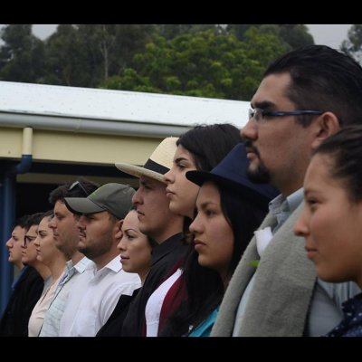

Proyectos Artísticos
Director Artístico y Tallerista – Proyecto Comunitario "El Silencio de los Cerros" (2025)
Proyecto artístico y de formación en teatro y expresión escénica en comunidades de la Zona de los Santos, financiado por el Programa Puntos de Cultura.
Presidente – Asociación Escuela de Arte de León Cortés (2024–2025)
Liderazgo en iniciativas de formación artística, talleres y actividades culturales en la Zona de los Santos.


Director Artístico y Gestor Cultural – Historias del Abejonal (2023)
Proyecto de narrativas comunitarias en Cerro Abejonal.
Director Grupo de Teatro “Tres Pelos” – Teatro comunitario, San Pablo de León Cortés (2019–2025)
Producción de obras teatrales con enfoque comunitario.
Productor y Gestor Cultural – Festival Pajarearte, Comité Cantonal de la Persona Joven de León Cortés (2017, 2018)
Organización de dos ediciones del festival, impulsando la cultura joven y el arte rural.

Director Grupo de Teatro “La Silampa” – UNED (2010, 2011, 2014, 2015, 2023–2025)
Dirección de grupo teatral universitario en la Sede San Marcos.
Co-creador, Director de Actores, Gestión Cultural y Producción – Película "Hoy es viernes y mañana también" (2019–2022)
Película de realismo mágico estrenada en San Pablo de León Cortés.
Co-creador y Gestor Cultural – Proyecto Audiovisual “Teleleco” independiente (2023)
Proyecto de creación colectiva dirigido por Adrián Naranjo, con enfoque en ambientalismo y comunidad.
Co-creador y Actor – Proyecto Audiovisual “Salvaje” (2019)
Producción audiovisual de poesía y territorio.